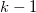
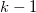
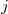
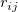
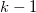

/math-cfebfa945941b02f58dc453d7b14aeb5.png "x^2\,\!") 分布で比較され、この分布は  の自由度を持ちます。ここでkは、標本の合計数です。
分布で比較され、この分布は  の自由度を持ちます。ここでkは、標本の合計数です。
以下の説明は、NAGのアルゴリズムから引用したものです。
各列の値はランク付けされ、 観測の処理内のブロックの中でランク付けされたスコアはと表記されます。平均の順位がスコアを結びつけるのに割り当てられます。
有意水準は、 分布で比較され、この分布は  の自由度を持ちます。ここでkは、標本の合計数です。
このアルゴリズムの詳細は、nag_friedman_test (g08aec)をご覧下さい。